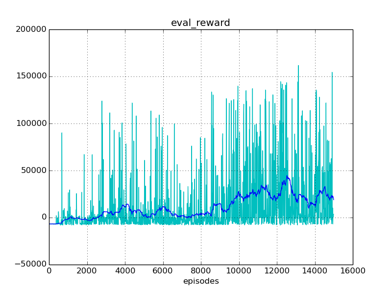
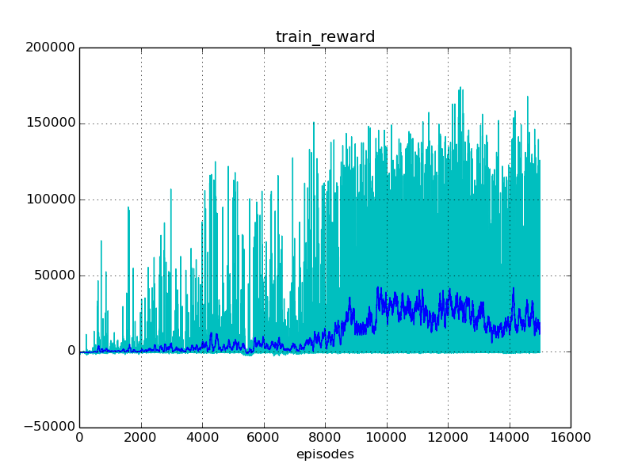
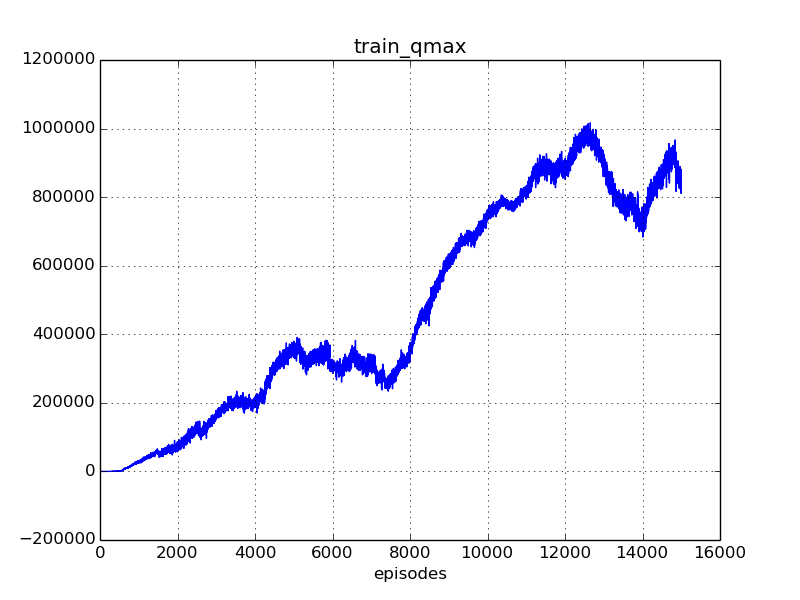
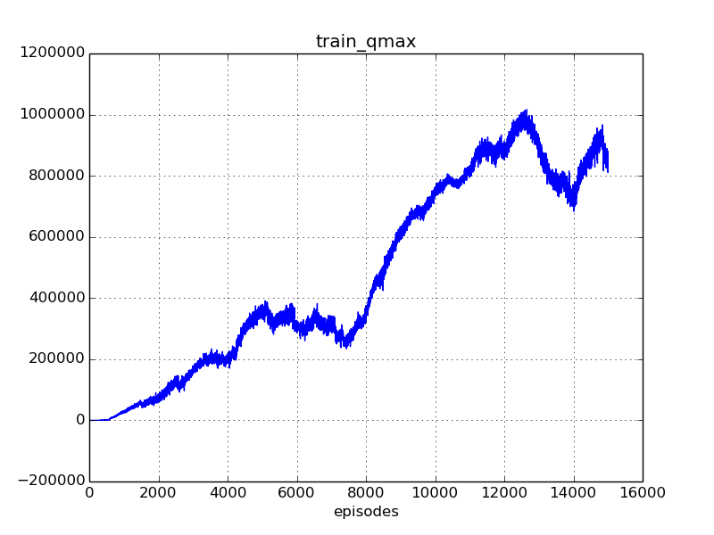

Experiment #010
Reward: 14275
Qmax: 606442
Left: 07:28:20 (60%)
Report time: 2017-02-01 08:56:45
Host name: bernard
Configuration
Experiment:
exp.base_path: ../experiments/
exp.episodes: 15000
exp.id: 010
exp.logger_class: core.logger.Logger
exp.mind_class: tf.mind.TensorflowMind
exp.platform_class: tf.platform.TensorflowPlatform
exp.save_every_episodes: 100
exp.steps: 150
exp.world_class: zoo.scorpion.world.ScorpionWorld
Algorithm:
alg.batch_size: 128
alg.buffer_size: 100000
alg.noise_rate_method: linear_05_00
alg.noise_sigma: 0.1
alg.noise_theta: 0.01
Mind:
mind.evaluate_every_episodes: 10
Environment:
env.assets: ../assets/
env.done_method: done_ball_under_1
env.episode_jpos_method: jpos_init_ball
env.frame_skip: 2
env.id: Zoo:Mujoco:Scorpion-v1
env.init_every_episods: 30
env.reward_method: ball_very_height_reward
env.step_jpos_method: jpos_do_nothing
env.target_range_xz: [[-0.7, 0.7], [0.5, 1.0]]
env.world.agents: ['scorpion', 'ball']
env.world.scorpion.agents: ['tentacle', 'target']
env.world.scorpion.algorithm:
env.world.scorpion.class: zoo.scorpion.scorpion.ScorpionAgent
env.world.scorpion.inputs: ['ball_x', 'ball_y', 'ball_z']
env.world.scorpion.tentacle.algorithm:
env.world.scorpion.tentacle.inputs: ['target_x', 'target_z']
env.world.scorpion.tentacle.mind_path: ../experiments/003/mind/world.scorpion.tentacle
Reporting:
report.diagram_mean_frame: 50
report.refresh_html_every_secs: 90
report.summary_every_episodes: 30
report.write_every_episodes: 2
Progress
Episodes: 8970
Steps: 1345500
Total time: 18:35:16
spent: 11:06:56 (59%)
left: 07:28:20
Finish: 16:25:05 2017-02-01
Performance: 0.22 per sec
Results
Train reward: +18205.68
Eval reward: +14275.03
Diagrams


 

Instances
Experiment:
id: 010
work_path: ../experiments/010
platform: TensorflowPlatform
world: ScorpionWorld:
env_id: Zoo:Mujoco:Scorpion-v1
model_path: ../assets/world.xml
total_act_dim: 6
env: ScorpionEnv:
model_path: /home/roman-ml/prj/rmus/zoo/zoo/scorpion/experiments/010/environment/env_model.xml
sensors:
world.scorpion.sensor_head_pos [1]
world.scorpion.sensor_head_vel [1]
world.scorpion.tentacle.sensor_s1_pos [1]
world.scorpion.tentacle.sensor_s1_vel [1]
world.scorpion.tentacle.sensor_s2_pos [1]
world.scorpion.tentacle.sensor_s2_vel [1]
world.scorpion.tentacle.sensor_s3_pos [1]
world.scorpion.tentacle.sensor_s3_vel [1]
world.scorpion.target.sensor_x [1]
world.scorpion.target.sensor_z [1]
world.ball.sensor_x [1]
world.ball.sensor_y [1]
world.ball.sensor_z [1]
world.ball.sensor_vx [1]
world.ball.sensor_vy [1]
world.ball.sensor_vz [1]
world.ball.sensor_accelerometer [3]
actuators:
world.scorpion.actuator_head [-10 +10]
world.scorpion.actuator_target_x [-2 +2]
world.scorpion.actuator_target_z [-1 +2]
world.scorpion.tentacle.actuator_s1 [-2000 +2000]
world.scorpion.tentacle.actuator_s2 [-1500 +1500]
world.scorpion.tentacle.actuator_s3 [-500 +500]
sensors:
no
actuators:
no
observations:
sensor: world.scorpion.sensor_head_pos=[+2.09]
sensor: world.scorpion.sensor_head_vel=[-5.55e-05]
inputs: world.scorpion.inputs_ball_x=[+3.15]
inputs: world.scorpion.inputs_ball_y=[-5.31]
inputs: world.scorpion.inputs_ball_z=[-3.83]
sensor: world.scorpion.tentacle.sensor_s1_pos=[+1.23]
sensor: world.scorpion.tentacle.sensor_s1_vel=[-0.0346]
sensor: world.scorpion.tentacle.sensor_s2_pos=[-1.59]
sensor: world.scorpion.tentacle.sensor_s2_vel=[+0.918]
sensor: world.scorpion.tentacle.sensor_s3_pos=[+2.39]
sensor: world.scorpion.tentacle.sensor_s3_vel=[+0.947]
inputs: world.scorpion.tentacle.inputs_target_x=[+1.53]
inputs: world.scorpion.tentacle.inputs_target_z=[-0.205]
sensor: world.scorpion.target.sensor_x=[+1.53]
sensor: world.scorpion.target.sensor_z=[-0.205]
sensor: world.ball.sensor_x=[+3.15]
sensor: world.ball.sensor_y=[-5.31]
sensor: world.ball.sensor_z=[-3.83]
sensor: world.ball.sensor_vx=[+3.39]
sensor: world.ball.sensor_vy=[-5.72]
sensor: world.ball.sensor_vz=[-5.56]
sensor: world.ball.sensor_accelerometer=[-0.566,+0.953,+0.927]
mind: TensorflowMind:
saved_episode: None
algorithm: DummyAlgorithm:
scope: DummyAlgorithm_world
obs_dim: 24
act_dim: 0
agents:
world.scorpion: ScorpionAgent >>>> training <<<<:
model_path: ../assets/scorpion.xml
alg_obs: [+2.09,-5.55e-05,+3.15,-5.31,-3.83,+1.23,-0.0346,-1.59,+0.918,+2.39,+0.947,+1.53,-0.205,+1.53,-0.205]
alg_obs_dim: 15
alg_act_dim: 3
sensors:
world.scorpion.sensor_head_pos [1]
world.scorpion.sensor_head_vel [1]
actuators:
world.scorpion.actuator_head [-10 +10]
world.scorpion.actuator_target_x [-2 +2]
world.scorpion.actuator_target_z [-1 +2]
observations:
sensor: world.scorpion.sensor_head_pos=[+2.09]
sensor: world.scorpion.sensor_head_vel=[-5.55e-05]
inputs: world.scorpion.inputs_ball_x=[+3.15]
inputs: world.scorpion.inputs_ball_y=[-5.31]
inputs: world.scorpion.inputs_ball_z=[-3.83]
sensor: world.scorpion.tentacle.sensor_s1_pos=[+1.23]
sensor: world.scorpion.tentacle.sensor_s1_vel=[-0.0346]
sensor: world.scorpion.tentacle.sensor_s2_pos=[-1.59]
sensor: world.scorpion.tentacle.sensor_s2_vel=[+0.918]
sensor: world.scorpion.tentacle.sensor_s3_pos=[+2.39]
sensor: world.scorpion.tentacle.sensor_s3_vel=[+0.947]
inputs: world.scorpion.tentacle.inputs_target_x=[+1.53]
inputs: world.scorpion.tentacle.inputs_target_z=[-0.205]
sensor: world.scorpion.target.sensor_x=[+1.53]
sensor: world.scorpion.target.sensor_z=[-0.205]
mind: TensorflowMind:
saved_episode: 8899
algorithm: DDPG_PeterKovacs
scope: DDPG_PeterKovacs_world_scorpion
obs_dim: 15
act_dim: 3
buffer: ReplayBuffer:
buffer_size: 100000
num_experiences: 100000
episode: 8969
agents:
world.scorpion.tentacle: MujocoAgent:
model_path: ../assets/tentacle.xml
alg_obs: [+1.23,-0.0346,-1.59,+0.918,+2.39,+0.947,+1.53,-0.205]
alg_obs_dim: 8
alg_act_dim: 3
sensors:
world.scorpion.tentacle.sensor_s1_pos [1]
world.scorpion.tentacle.sensor_s1_vel [1]
world.scorpion.tentacle.sensor_s2_pos [1]
world.scorpion.tentacle.sensor_s2_vel [1]
world.scorpion.tentacle.sensor_s3_pos [1]
world.scorpion.tentacle.sensor_s3_vel [1]
actuators:
world.scorpion.tentacle.actuator_s1 [-2000 +2000]
world.scorpion.tentacle.actuator_s2 [-1500 +1500]
world.scorpion.tentacle.actuator_s3 [-500 +500]
observations:
sensor: world.scorpion.tentacle.sensor_s1_pos=[+1.23]
sensor: world.scorpion.tentacle.sensor_s1_vel=[-0.0346]
sensor: world.scorpion.tentacle.sensor_s2_pos=[-1.59]
sensor: world.scorpion.tentacle.sensor_s2_vel=[+0.918]
sensor: world.scorpion.tentacle.sensor_s3_pos=[+2.39]
sensor: world.scorpion.tentacle.sensor_s3_vel=[+0.947]
inputs: world.scorpion.tentacle.inputs_target_x=[+1.53]
inputs: world.scorpion.tentacle.inputs_target_z=[-0.205]
mind: TensorflowMind:
saved_episode: 22399
algorithm: DDPG_PeterKovacs
scope: DDPG_PeterKovacs_world_scorpion_tentacle
obs_dim: 8
act_dim: 3
buffer: ReplayBuffer:
buffer_size: 100000
num_experiences: 100000
episode: 22399
agents:
no
world.scorpion.target: MujocoAgent:
model_path: ../assets/target.xml
alg_obs: [+1.53,-0.205]
alg_obs_dim: 2
alg_act_dim: 0
sensors:
world.scorpion.target.sensor_x [1]
world.scorpion.target.sensor_z [1]
actuators:
no
observations:
sensor: world.scorpion.target.sensor_x=[+1.53]
sensor: world.scorpion.target.sensor_z=[-0.205]
mind: TensorflowMind:
saved_episode: None
algorithm: DummyAlgorithm:
scope: DummyAlgorithm_world_scorpion_target
obs_dim: 2
act_dim: 0
agents:
no
world.ball: MujocoAgent:
model_path: ../assets/ball.xml
alg_obs: [+3.15,-5.31,-3.83,+3.39,-5.72,-5.56,-0.566,+0.953,+0.927]
alg_obs_dim: 9
alg_act_dim: 0
sensors:
world.ball.sensor_x [1]
world.ball.sensor_y [1]
world.ball.sensor_z [1]
world.ball.sensor_vx [1]
world.ball.sensor_vy [1]
world.ball.sensor_vz [1]
world.ball.sensor_accelerometer [3]
actuators:
no
observations:
sensor: world.ball.sensor_x=[+3.15]
sensor: world.ball.sensor_y=[-5.31]
sensor: world.ball.sensor_z=[-3.83]
sensor: world.ball.sensor_vx=[+3.39]
sensor: world.ball.sensor_vy=[-5.72]
sensor: world.ball.sensor_vz=[-5.56]
sensor: world.ball.sensor_accelerometer=[-0.566,+0.953,+0.927]
mind: TensorflowMind:
saved_episode: None
algorithm: DummyAlgorithm:
scope: DummyAlgorithm_world_ball
obs_dim: 9
act_dim: 0
agents:
no
logger: Logger:
saved_time: 00:00:00
train_history: 8970
eval_history: 896
reporter: Reporter:
html_path: /home/roman-ml/prj/rmus/zoo/zoo/scorpion/experiments/010/reporter/report.html